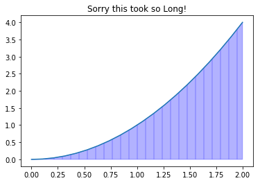
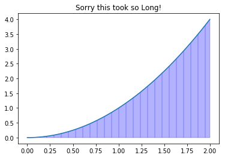

Writing a program in Python¶
In [21]:
%%HTML
<iframe width="560" height="315" src="https://www.youtube.com/embed/lFtslB_aUGA?ecver=1" frameborder="0" allow="autoplay; encrypted-media" allowfullscreen></iframe>
This is an example of an integrator program that uses our approximation methods with a large number of rectangles to generate a numerical and graphical approximation of an integral. Recall our definition:
\[\displaystyle \text{Approximate Area} = \frac{b - a}{n} \sum_{i = 1}^n f(i \times \frac{b - a}{n})\]
or
\[\Delta x \sum_{i = 1}^n f(i \Delta x) \quad \text{where} ~ \Delta x = \frac{b-a}{n}\]
In [1]:
%matplotlib inline
import numpy as np
import matplotlib.pyplot as plt
In [2]:
def f(x):
return x**2
In [3]:
a = 0
b = 3
n = 6
width = (b-a)/n
In [5]:
xs = [(i*width) for i in range(1,n+1)]
In [6]:
xs
Out[6]:
[0.5, 1.0, 1.5, 2.0, 2.5, 3.0]
In [7]:
ys = [f(i) for i in xs]
In [8]:
ys
Out[8]:
[0.25, 1.0, 2.25, 4.0, 6.25, 9.0]
In [9]:
areas = [width * i for i in ys]
In [10]:
areas
Out[10]:
[0.125, 0.5, 1.125, 2.0, 3.125, 4.5]
In [11]:
total_area = sum(areas)
In [12]:
total_area
Out[12]:
11.375
In [13]:
def area(a, b, n):
width = (b-a)/n
xs = [(a + i*width) for i in range(1, n+1)]
ys = [f(i) for i in xs]
areas = [width * i for i in ys]
total_area = sum(areas)
print('The approximation with ', n, 'rectangles equals', round(total_area, 3))
In [14]:
area(0, 3, 6)
The approximation with 6 rectangles equals 11.375
Saving and Reusing the Function¶
Below is the code that is saved in a file named integrator.py
written with a text editor. I have this file saved in the same directory
as the notebook. Now, I can import the function at any time by calling
the file and renaming it something like the_grator.
import integrator as the_grator
Then I can use the function as long as I’ve declared a function \(f\) in advance of using the program. Also, make sure you’ve asked the notebook to produce graphs inline.
def integrate(f, a, b, n=10000000):
x = np.linspace(a, b, n)
width = (b-a)/n
heights = [f(a)]
for i in range(n):
next = f(i*width)
heights.append(next)
areas = [i*width for i in heights]
total_area = sum(areas)
print('The area under the curve \nis equal to', round(total_area, 2))
plt.plot(x, f(x))
plt.fill_between(x, f(x), alpha = 0.3, color = 'blue', hatch = '|')
plt.title('Sorry this took so Long!')
In [15]:
import integrator as the_grator
In [16]:
the_grator.integrate(f, 0, 2, n=20)
The area under the curve
is equal to 2.47

In [17]:
the_grator.integrate(f, 0, 2, n=20000)
The area under the curve
is equal to 2.67

In [19]:
the_grator.integrate(f, 0, 2, n=20000000)
The area under the curve
is equal to 2.67